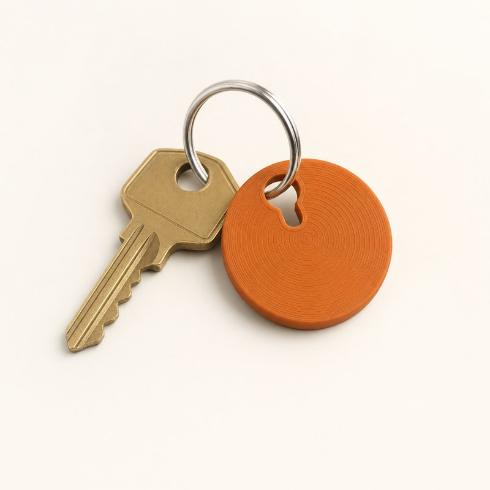
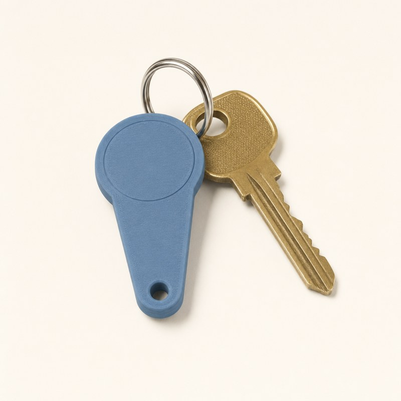
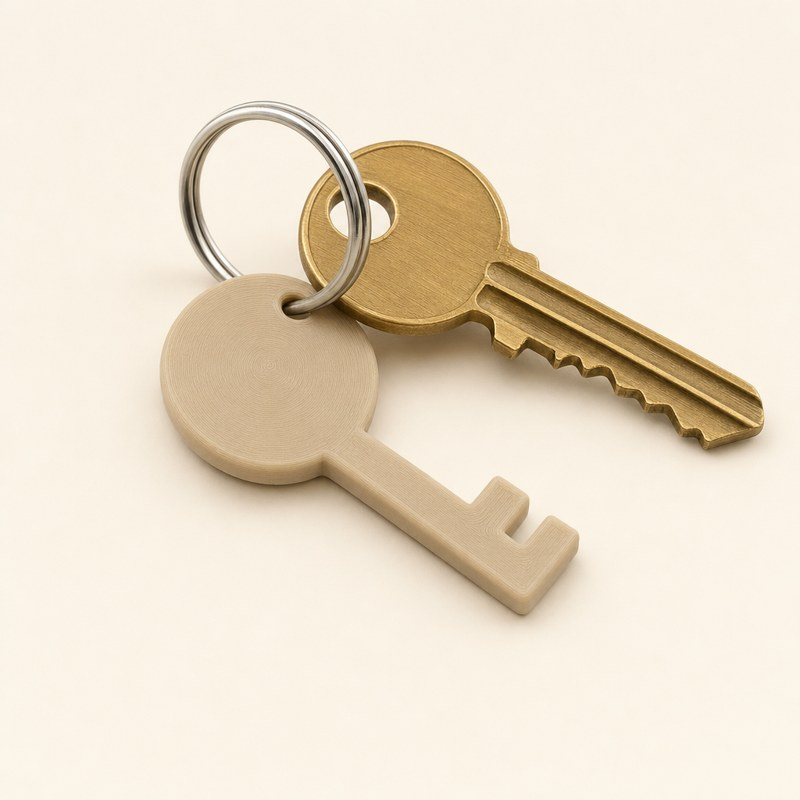
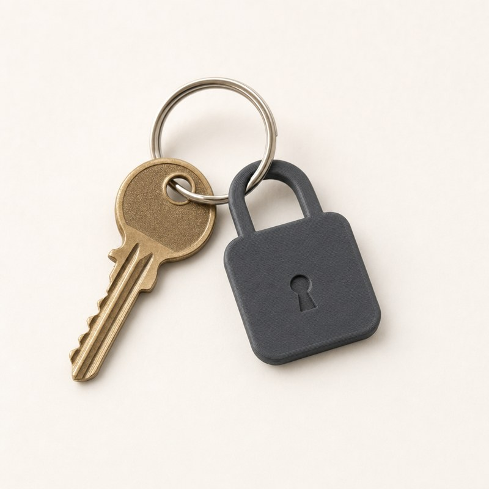
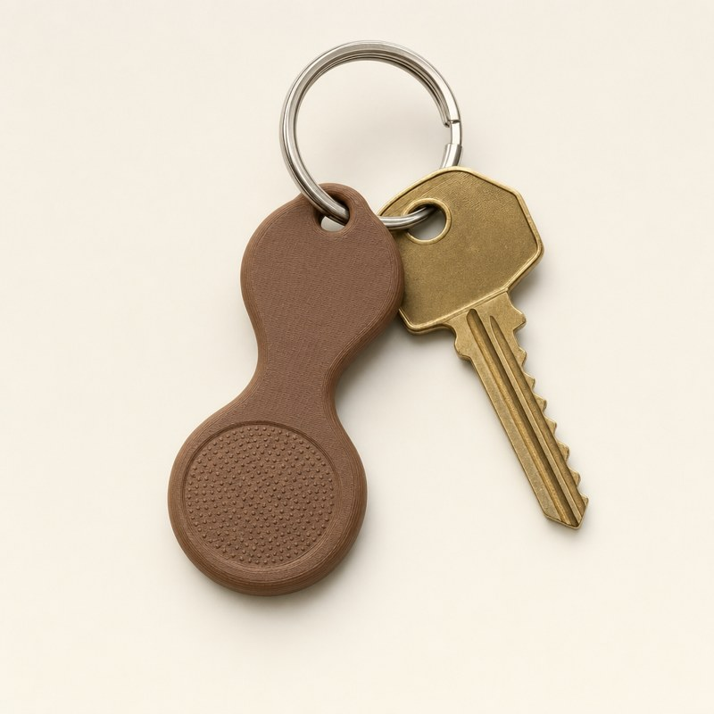
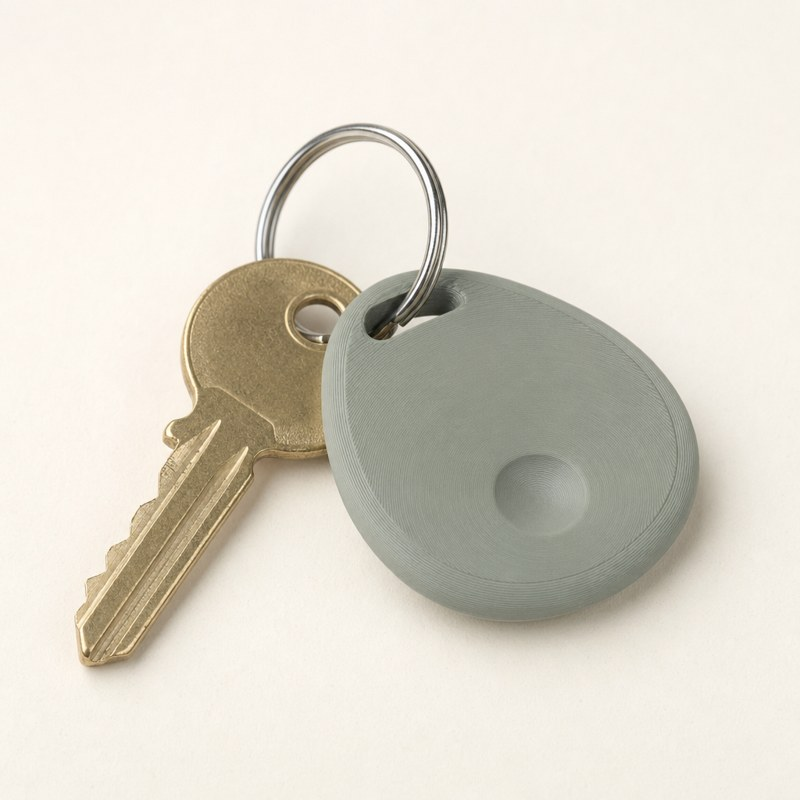

Today's Key is a 79 × 38 × 2.5 mm plate. You tap it with your phone to unlock blocked apps for up to 60 minutes. Each concept below is a third to half that size and keeps a round tap spot big enough for the NFC tag inside.

A round coin. The keyring runs through a keyhole cut into it.
Tap: the concentric rings on the face.

The whole outline is a keyhole, with the ring hole at the narrow tip.
Tap: the raised round head.

A half-size old-style key, so the product still looks like a key.
Tap: the round bow.

A flat padlock whose shackle is the keyring loop. You tap the lock to open your apps.
Tap: the body, around the keyhole mark.

Refers to the 60-minute unlock window.
Tap: the dotted bottom bulb.

A soft pebble that is comfortable in a pocket.
Tap: the thumb dimple.